A Hello Kitty, criada pela Sanrio em 1974, se tornou um dos ícones pop mais famosos do mundo. Sua popularidade cresceu por causa do visual simples, fofinho e fácil de reconhecer, e porque aparece em praticamente tudo: roupas, brinquedos, jogos, acessórios e até coleções de luxo. Com o tempo, a marca se expandiu muito através de séries animadas e filmes, o que ajudou a personagem a atingir diferentes gerações.
 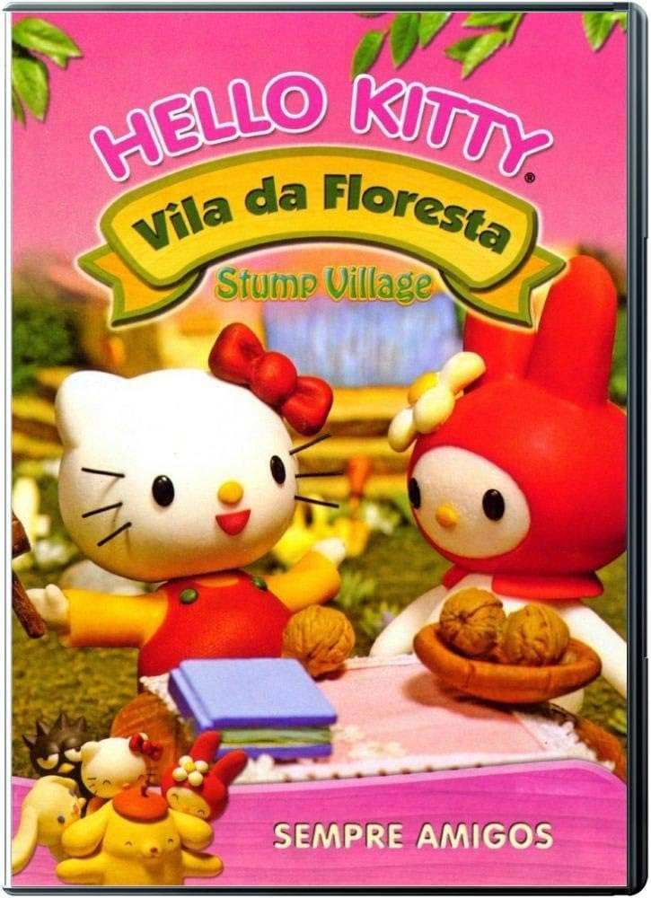
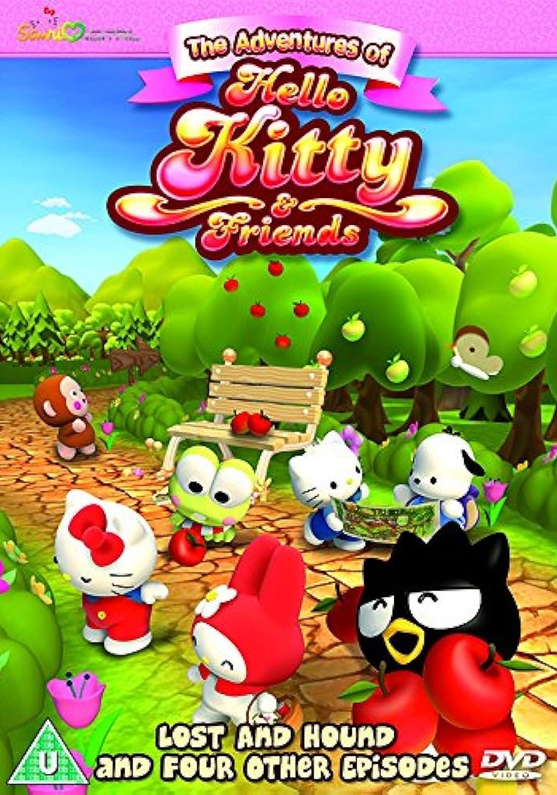
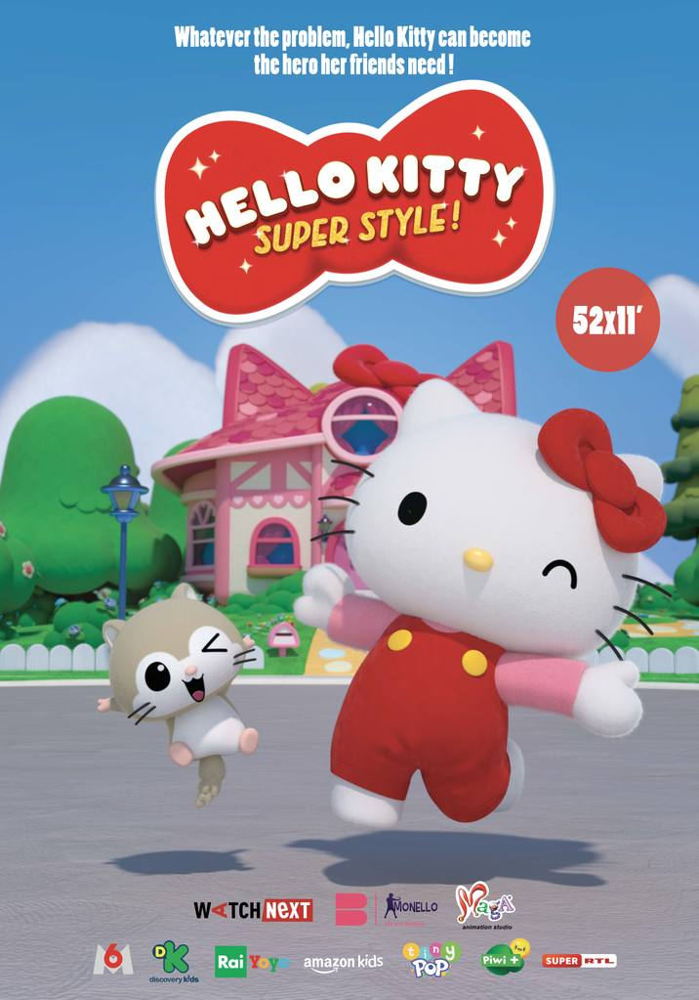
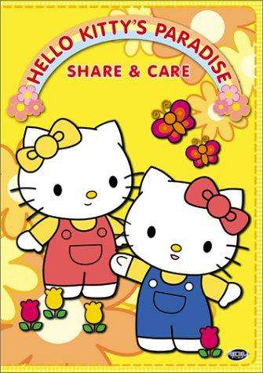
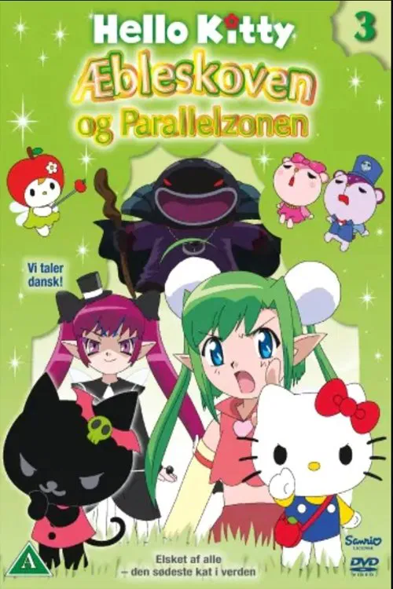
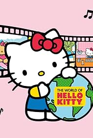
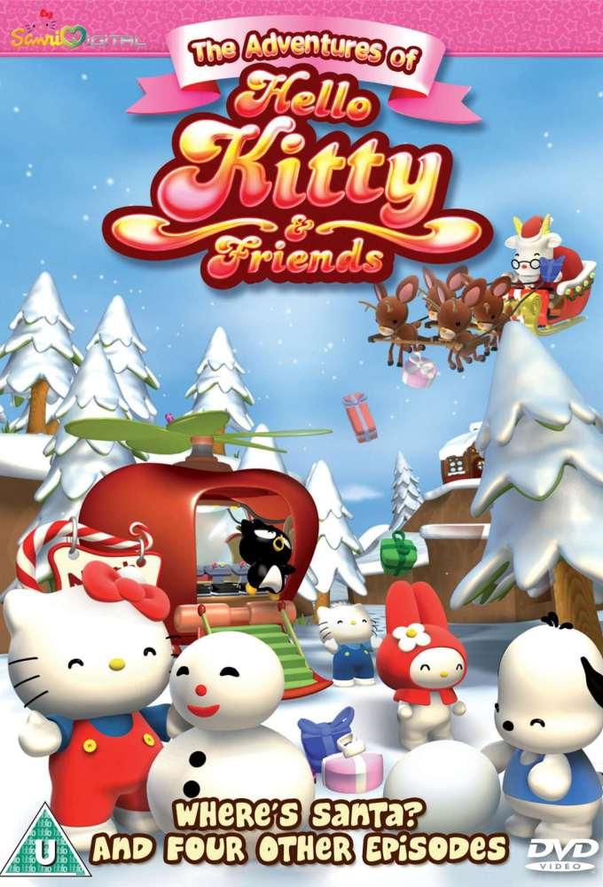
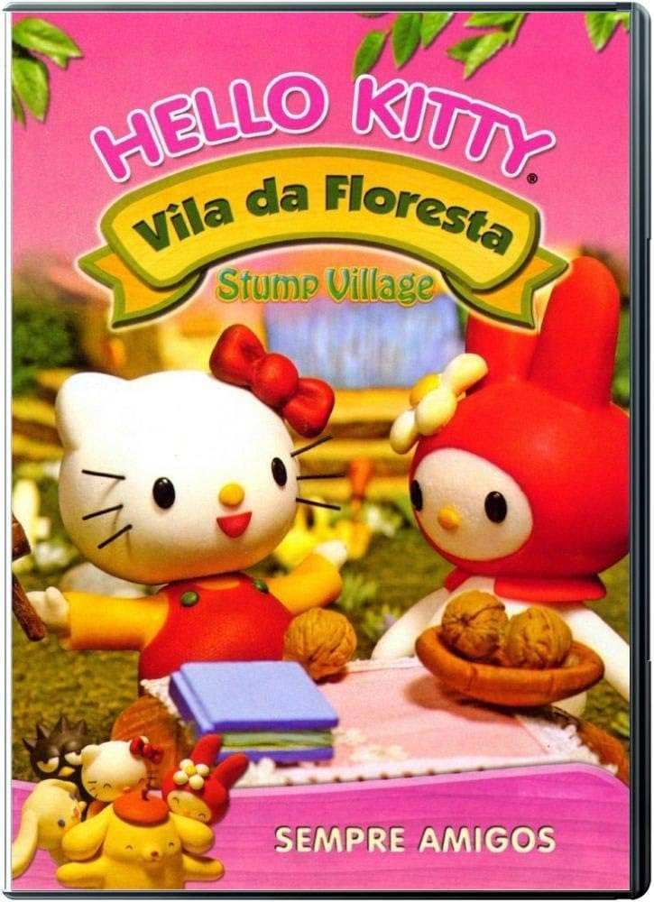
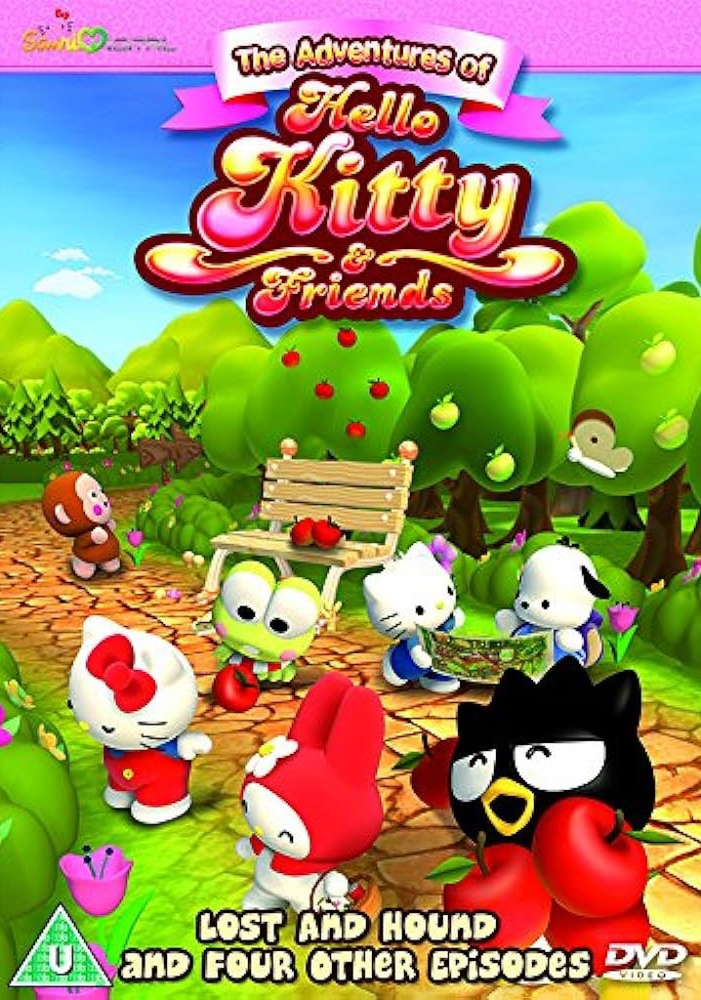
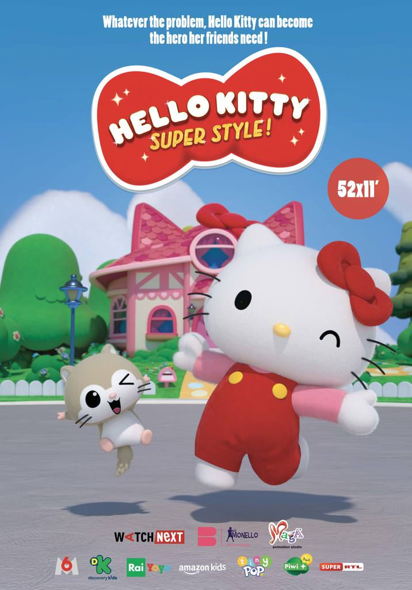
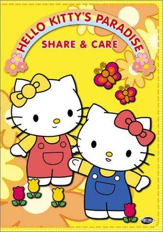
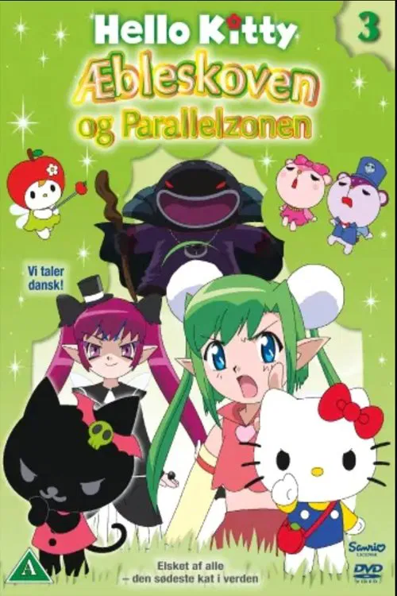
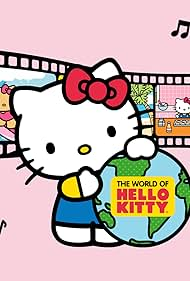
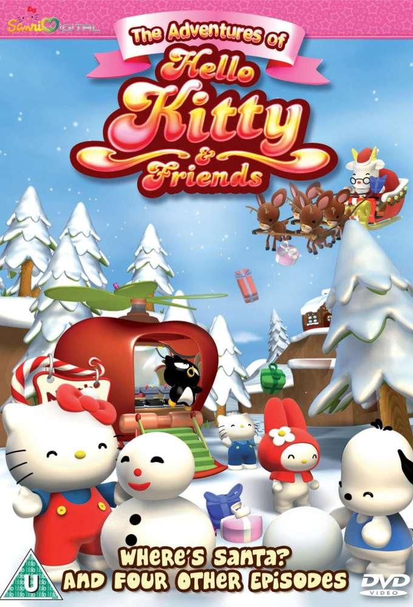
Hello Kitty: Super Cute Adventures é uma série animada em formato de curtos episódios (geralmente de 3 a 5 minutos)criada pela Sanrio e lançada no YouTube a partir de 2020. Ela é pensada para ser leve, divertida e voltada para todas as idades, especialmente crianças e fãs do universo da Hello Kitty.
É uma animação japonesa lançada direto em DVD, parte da linha de animações clássicas da Sanrio, feita antes das séries mais modernas da personagem.Ela apresenta histórias curtas e muito fofas, misturando aventura, fantasia e lições positivas. É uma animação japonesa lançada direto em DVD, parte da linha de animações clássicas da Sanrio, feita antes das séries mais modernas da personagem.Ela apresenta histórias curtas e muito fofas, misturando aventura, fantasia e lições positivas.
É uma animação japonesa lançada direto em DVD, parte da linha de animações clássicas da Sanrio, feita antes das séries mais modernas da personagem.Ela apresenta histórias curtas e muito fofas, misturando aventura, fantasia e lições positivas.
Hello Kitty: Super Style! é uma série animada em 3D lançada a partir de 2022, produzida pela Amazon Kids+, Watch Next Media e Monello Productions, com aprovação da Sanrio. É atualmente uma das séries mais modernas e populares da Hello Kitty.
É uma série animada em 3D lançada em 2008, produzida pela Sanrio Digital e pela Dream Cortex. Ela foi criada para modernizar o universo da Hello Kitty, trazendo histórias curtas, educativas e coloridas, com gráficos computadorizados e estética kawaii
Hello Kitty’s Paradise é uma das séries mais antigas e famosas da Hello Kitty. Ela foi lançada originalmente no Japão entre 1999 e 2001, com o nome Kitty no Paradise. Depois, ganhou versões dubladas nos EUA e em outros países. É uma série educativa, super fofa e pensada especialmente para crianças pequenas, mas muito querida por fãs de todas as idades.
Essa animação faz parte de um conjunto de episódios especiais da Hello Kitty lançados no Japão e depois distribuídos em vários países da Europa com títulos diferentes. Ela pertence ao período dos anos 2000, quando a Sanrio lançou vários filmes curtos com histórias
The World of Hello Kitty não é uma série longa tradicional como Super Style ou Super Cute Adventures. Ela é, na verdade, um conjunto de animações especiais lançadas entre os anos 90 e 2000, muitas vezes distribuídas em VHS ou DVD.
É um episódio especial da série em 3D The Adventures of Hello Kitty & Friends, no qual Hello Kitty e seus amigos vivem uma aventura para ajudar o Papai Noel quando algo dá errado no Polo Norte. No especial, os personagens estão animados com o Natal quando descobrem que Papai Noel desaparecceu misteriosamente.